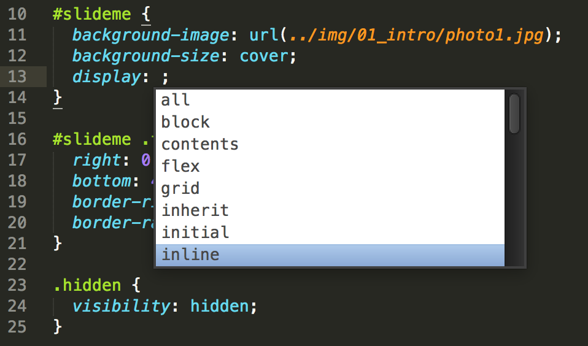
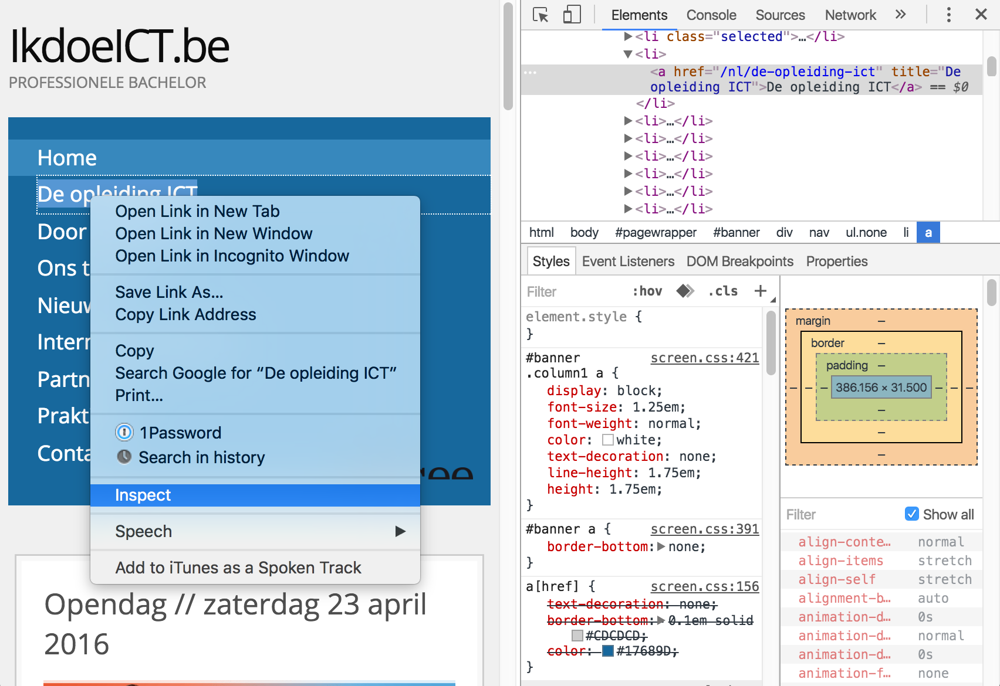
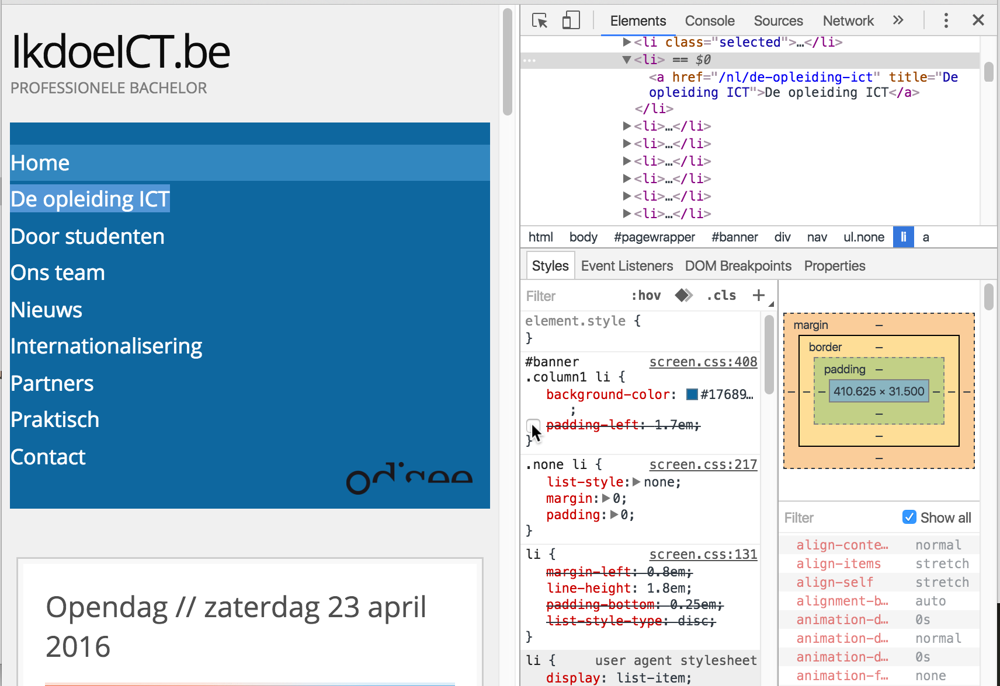
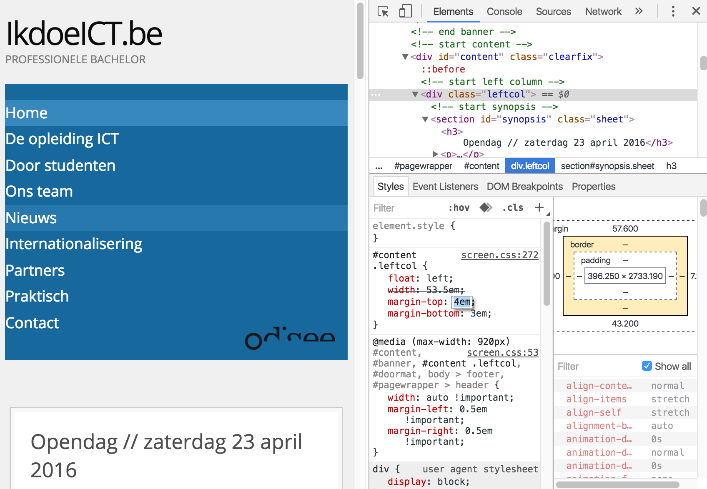
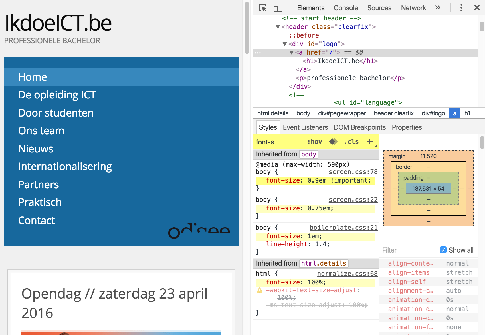
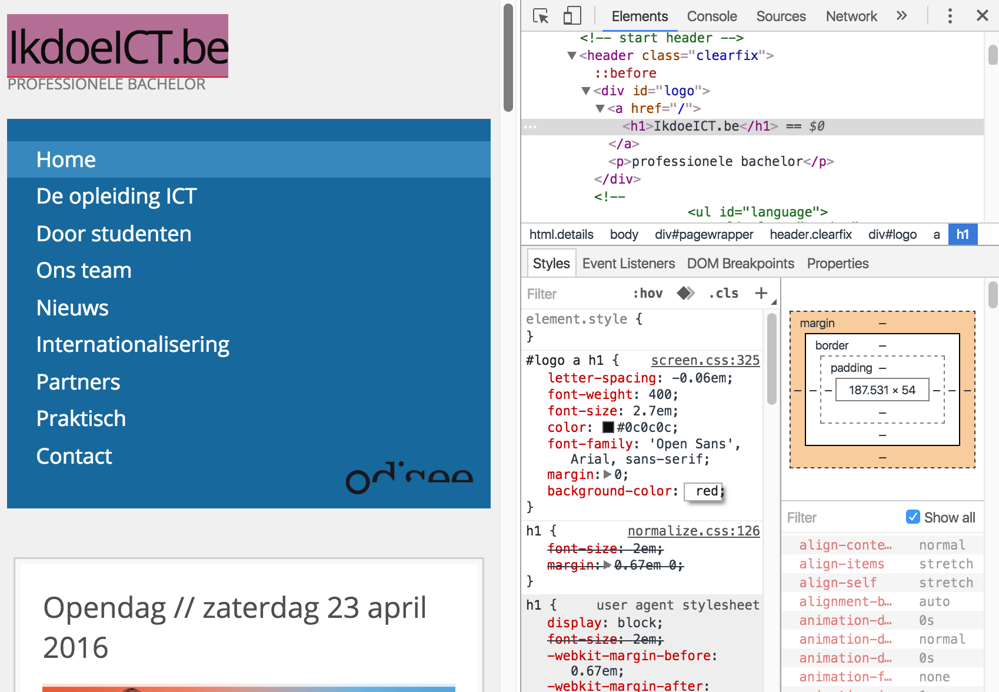

CSS Summary
use the arrow keys to navigate; press space for slide overviewCSS
Stylesheets
Including styles (1)
- don't use inline or internal stylesheets, only external stylesheets
-
all css links should be placed in the
<head>:... <head> ... <link rel="stylesheet" href="css/stylesheet1.css" /> <link rel="stylesheet" href="css/stylesheet2.css" /> <link rel="stylesheet" href="css/stylesheet3.css" /> ... </head> ...
Including styles (2)
-
common errors / tips:
... <head> ... <!-- type attribute not needed in HTML5 --> <linktype="text/css"rel="stylesheet" href="..." /> <!-- ERROR! wrong rel --> <link rel="common" href="..." /> <!-- ERROR! typo -> tip: check link with inspector --> <link rel="stylesheet" href="ccs/common.css" /> ... </head> ...
Organizing styles
-
minimum suggested stylesheets for e.g. index.html:
... <head> ... <link rel="stylesheet" href="css/start.css" /> <link rel="stylesheet" href="css/common.css" /> <link rel="stylesheet" href="css/index.css" /> ... </head> ...-
start.csscontains all generic code -
common.csscontains all common code for all pages -
index.css, somepage.css... contains all page specific css
-
Start CSS (1)
-
start.csscontains all universally reusable css; think of- 62.5% fontsize
- some css reset
clearfixclass code (for floated layouts)structuralclass code (for outlining)irclass code (for image replacement)
Start CSS (2)
-
sample code used in e.g. lab session 9:
/** * Generic styles for site <site-name> * * @author Rogier van der Linde
Common CSS (1)
-
common.cssorstyles.css: contains all css common for all pages; think of- general element styles for
<body>,<a>,<p>,<h1>,<h2>etc... - header with logo, menu...
- common content styles
- doormat
- footer
- common media queries
- general element styles for
Common CSS (2)
-
Structure and comment your stylesheet in a consistent way; an example:
/** * Common styles for site <site-name> * * @author Rogier van der Linde
Page specific CSS
-
Use the same structure for page-specific styes
/** * Page-specific styles for site <site-name> * * @author Rogier van der Linde
CSS layout (1)
-
Properly layout your css:
- each property on a separate line
- properly indent (tabs OR spaces)
- space after :
- whiteline after each block
p { line-height: 1.3; color: #333 } .box { background-color: #666; font-size: 1.2rem; padding: 1rem 2rem; } @media (min-width: 50em) { .box { padding: 0; } }
CSS layout (2)
-
Properly layout your css:
p { line-height: 1.3; color: #333; } .box { background-color: #666; font-size: 1.2rem; padding: 1rem 2rem; } @media (min-width: 50em) { .box { padding: 0; } }
Editing tools (1)
- Use Ctrl-Space to call autocomplete: 
Editing tools (2)
- Inspect an element: 
Editing tools (3)
- Disable properties: 
Editing tools (4)
-
Find out which property value applies and from where:

Editing tools (5)
-
Inspect states:

Editing tools (6)
-
Box model:

Editing tools (7)
- Live edit values (optionally use arrows) 
Editing tools (8)
- Filter properties: 
Editing tools (9)
- Add new style rules: 
Editing tools (10)
-
Remove large portions of the DOM to isolate a problem:

Editing tools (10)
-
Remove large portions of the DOM to isolate a problem:

Editing tools (11)
-
For advanced image inspection (and processing) without Photoshop, check the free great Pixlr Editor plugin for Chrome:

CSS
Selectors
Selecting elements
-
Selecting elements:
p { /* tag selector; selects <p> */ } .message { /* tag selector; selects <... class="message"> */ } .message.error { /* multiple class selector; selects <... class="message error"> */ } #lnk-login { /* id selector; selects <... id="lnk-login"> */ } * { /* selects all elements */ }
Element states
-
Selecting elements in a certain state:
a:hover { /* selects hovered link */ } textarea:focus { /* selects focused <textarea> */ } input[type=email]:invalid { /* selects invalid <input type="email"> */ } input:disabled { /* selects disabled <input> */ }
Parts of elements
-
Selecting parts of elements:
a::first-letter { /* selects first letter of <a> */ } ::selection { /* selects user selected part */ } li::after { content: url(../img/bullet.png); /* inject image before */ /* more content properties */ } li::after { content: "some text"; /* inject text after */ /* more content properties */ }
Combining selectors
-
Combining selectors:
p.message { /* tag-class selector; selects <p class="message"> */ } nav#mainmenu { /* tag-id selector; selects <nav id="mainmenu"> */ } #mainmenu.open { /* id-class selector; selects <... id="mainmenu" class="open"> */ } header li a { /* id-class selector; selects <a> nested in <li> nested in <header> */ } img, .thumb { /* iselects <img> and <... class="thumb"> */ }
Element positions
-
Specify element position:
h1 + p { /* selects <p> directly following <h1> */ } li + li { /* selects all <li>'s except first */ } li:first-child { /* selects first <li> of its parent */ } #content > section { /* selects <section> directly nested in <... id="content"> */ } article:nth-child(3n+1) { /* selects <article> that is the 1st, 4th, 7th, ... child of its parent */ } article:nth-of-type(3n+1) { /* selects the 1st, 4th, 7th, ... <article> of its parent */ }
Common mistakes
-
Some common mistakes:
p { font-size: 1rem /* ERROR: no semicolon */ color: red; } p .message { /* did you mean p.message? */ /* ... */ } .container { background-image: url(img/bg.png); /* did you mean url(../img/bg.png)? */ } .box { border: 1px; /* did you mean 1px solid? */ } .col-2 { padding: 5px; /* did you mean 2%? */ width: 50%; /* did you mean 46%? */ float: left; } p { font-size: 1.2rem; /* ERROR: closing bracket missing */
CSS
Values and properties
Grouping
-
Grouped properties:
p { /* groups font-size and color properties */ font-size: 1rem; color: red; } -
Grouped values:
.box { padding: 1rem 2rem 0 2rem; /* top right bottom left */ margin: 1rem 2rem; /* top-bottom left-right */ border: 1px solid #900; /* thickness style color */ background: #eee url(../img/bg.png) no-repeat center top; /* color image repeat positionX positionY */ font: italic uppercase bold 12px/30px Georgia, "Times New Roman", serif; /* style variant weight size/line-height family */ }- error prone; dont't forget properties or mix up the order!
-
in case of
fontorbackground, separate properties (font-family,font-weightetc...) are probably easier
Inheritance and priority
-
Remember, the final property value attributed to an element is, in descending order of priority:
- important styles (i.e.
p { color: red !important; }) - inline styles (i.e.
<p style="color: blue">) - external styles, heavier selectors first
- same selector weight: latest wins
-
if no style defined:
- if inheritable (mostly font related): parent style if defined
- else: browser default (may differ; consider using a CSS reset)
- important styles (i.e.
- use your inspector to see how and which styles are attributed!
Units and sizes (1)
-
Basic scheme:
html { font-size: 0.625em; /* resize to 1rem = 10px */ } body { font-size: 1.2rem; /* 12px standard font size */ } /* from here on, convert all pixel values to rem, i.e. 10px -> 1rem */ .box { width: 47.5rem; /* 475px */ height: 22rem; /* 220px */ }
Units and sizes (2)
- For 1px or 2px values, you may still use px, e.g. border widths
-
For flexible building blocks you should use %, e.g.
.col1 { width: 40%; float: left; } .col2 { width: 25%; float: left; margin-left: 5%; } .col3 { width: 25%; float: right; margin-left: 5%; } .banner img { width: 100%; }
Colors
-
Colors:
p { color: orange; /* mnemonic notation */ color: #ffa500; /* hex notation */ color: rgb(255, 165, 00); /* rgb notation */ color: rgba(255, 165, 00, 0.7); /* rgba notation */ color: #fa0; /* shorthand notation for #ffaa00 */ }
Backgrounds
-
Single covering background:
.container { background-image: url(../img/bg_full.png); /* note the ../ */ background-size: 100% 100%; /* fully stretch horizontal and vertical */ background-size: cover; /* other option: fully cover but keep aspect ratio */ } -
Single background image:
.container { background-image: url(../img/icon.png); /* note the ../ */ background-repeat: no-repeat; background-position: top center; /* horizontal and vertical position */ background-position: 1rem 2rem; /* other option; 10px left, 20px top */ } -
Repeating background:
.container { background-image: url(../img/visual.png); background-repeat: repeat-y; /* other options are repeat-x, repeat */ background-position: center; /* other options are left, right */ }
Image replacement (1)
-
Simple image replacement:
a.replace_me { display: block; width: 20rem; height: 10rem; white-space: nowrap; text-indent: 100%; overflow: hidden; background-image: url(../img/replace_image.png); background-size: 100% 100%; }
Image replacement (2)
-
Using a generic
irclass:<ul> <li class="ir facebook"><a href="#">facebook</a></li> <li class="ir twitter"><a href="#">twitter</a></li> <li class="ir gplus"><a href="#">google+</a></li> </ul>/* generic part */ .ir { display: block; white-space: nowrap; text-indent: 100%; overflow: hidden; background-size: 100% 100%; }/* non-generic part */ li.facebook a { width: 5rem; height: 5rem; background-image: url(../img/logo_fb.png); } li.twitter a { width: 5rem; height: 5rem; background-image: url(../img/logo_twitter.png); } li.gplus a { width: 5rem; height: 5rem; background-image: url(../img/logo_gplus.png); }
Image replacement (3)
-
Spritesheets:
a.replace_me { ... width: 5rem; height: 5rem; background-image: url(../img/replace_image.png); background-size: 1000% 500%; /* e.g. 10x5 spritesheet of 50px/50px icons */ background-position: -15rem -10rem; /* e.g. sprite on column 4, row 3 */ }
CSS
Box model
Box model (1)
-
Remember the weird box model:

Box model (2)
-
To get a total width of e.g. 250px, you need to substract horizontal borders and paddings:
p { background-color: #ccc; border: 2px solid black; margin: 10px; padding: 10px; width: 226px; /* 226 + 2*10 + 2*2 = 250 */ }
Box model (3)
-
Two 50% columns with fixed with borders/paddings are even impossible with this model:
.container { border: 4px dashed blue; overflow: hidden; /* cheap clearfix */ } .container-box { border: 10px solid #999; /* fixed width border */ float: left; padding: 20px; /* fixed width padding */ width: 50%; /* real width = 50% + 2*10px + 2*20px */ }
Box sizing (1)
-
You can fix this by setting
box-sizing: border-box:.container { border: 4px dashed blue; overflow: hidden; /* cheap clearfix */ } .container-box { border: 10px solid #999; box-sizing: border-box; /* try to remove this line */ float: left; padding: 20px; width: 50%; /* real width = 50% */ }
Box sizing (2)
-
Beware however when aligning a line of text vertically: now you have to substract paddings and borders from line-height (which is unaffected by the box model)
.box { border: 5px solid #999; box-sizing: border-box; /* default is content-box */ height: 60px; line-height: 30px; /* 40 - 2x5 - 2x10 */ padding: 10px; }line of text -
-
border-boxis generally easier, with a few exceptions like the code above
-
CSS
Layout
Center box horizontally
-
Center box horizontally:
.container { ... margin: 0 auto; /* center box horizontally */ }
Center box vertically
- You can't (we'll have to wait for flexbox support)
Center text horizontally
-
Center text horizontally:
.container { ... text-align: center; }
Center text vertically
-
Only works with single line of text:
li a { display: block; /* height only works with blocklevel elements */ height: 5rem; /* set height */ line-height: 5rem; white-space: nowrap; /* only works with a single line of text */ }
Floating (1)
-
basic scheme:
<div class="container clearfix"> <div class="box box1"></div> <div class="box box2"></div> <div class="box box3"></div> </div>.container { border: 4px dashed blue; } .box { float: left; box-sizing: border-box; padding: 2rem; border: 2px dashed gray; } .box1 { width: 20%; } .box2 { width: 50%; margin-left: 5%; } .box3 { width: 20%; margin-left: 5%; }
Floating (2)
-
steps:
- set column widths (total with margins should not exceed 100%)
- set
box-sizing: border-boxif you wish to set column paddings and/or borders - float all columns left (the last may also be floated right)
- apply clearfix to container
- most used layout technique
- may be used for horizontal menus, columns etc...
Clearing (1)
-
prevent elements to have floated elements left and / or right:
h1, h2, h3, h4 { clear: left; /* always start on a new line */ } footer { clear: both; /* no floated elements left or right */ }
Clearing (2)
-
remember to clear the next unfloated element:
<div class="container clearfix"> <div class="box box1"></div> <div class="box box2"></div> <div class="box box3"></div> <div class="footerbox"></div> </div>.container { border: 4px dashed blue; } .footerbox { border: 2px dashed red; clear: both; /* try removing this line */ } .box { float: left; box-sizing: border-box; padding: 2rem; border: 2px dashed gray; } .box1 { width: 20%; } .box2 { width: 50%; margin-left: 5%; } .box3 { width: 20%; margin-left: 5%; }
Clearing (3)
-
nice example with neat rows of boxes with different heights:
<div class="container clearfix"> <div class="box"></div> <div class="box"></div> <div class="box"></div> <div class="box"></div> ... </div>
Clearing (3)
-
the CSS:
.container { border: 2px dashed blue; width: 490px; } .box { float: left; margin-right: 10px; margin-bottom: 10px; width: 90px; } .box:nth-child(5n) { margin-right: 0; } .box:nth-child(5n+1) { clear: left; /* try removing this line */ }
Absolute/relative positioning
-
remember to set the parent
position: relative - doesn't play nice with responsive fluid designs; rather use floating + margins
-
only use
- when you really need stacked elements
- to position elements outside their parent
Responsive (1)
-
Quick recap of all steps:
- make the desktop version using em/rem units
-
make the page flexible and fluid
- set
max-widthandmin-widthfor wrappers - remove
heightfor all flexible elements - use percentages for column widths and margins
- use
width: 100%; max-width: ...em(native width) for flexible images
- set
- decide on a breakpoint; add media query block at the bottom
- adjust the CSS code above for mobile version; where necessary, correct in media query for desktop version
- optional: add more breakpoints
- add the viewport metatag
Responsive (2)
-
example for images in a flexible context:
.container { border: 2px dashed blue; resize: horizontal; width: 200px; } .photo { /* flexible */ width: 100%; max-width: 500px; /* native width */ } .logo { /* not flexible */ width: 100px; /* native width */ height: 50px; /* native height */ }
CSS
HTML5/CSS3
Webfonts
-
Option 1: download fonts and include them:
@font-face { font-family: 'LeagueGothic'; src: url(../fonts/LeagueGothic.otf); } -
Option 2: find online hosted fonts, e.g. Google fonts, and include the code in the
<head>:<head> ... <link rel="stylesheet" href="https://fonts.googleapis.com/css?family=Open+Sans:400,600italic,800"> ... </head> -
- first option is nicer in offline situations, second option is easier
Gradients
- Gradients:
-
background: -webkit-linear-gradient(top, #fff 10%, #fff057 90%); background: -o-linear-gradient(top, #fff 10%, #fff057 90%); background: -moz-linear-gradient(top, #fff 10%, #fff057 90%); background: -ms-linear-gradient(top, #fff 10%, #fff057 90%); background: linear-gradient(top, #fff 10%, #fff057 90%);GRADIENT EXAMPLE- add vendor prefixes when you've finished the rest of your CSS
- several online tools exist to generate your gradient
Shadow & radius
-
Some effects:
box-shadowtext-shadowborder-radius
-
box-shadow: 10px 10px 5px #888; text-shadow: 2px 2px 5px #008; border-radius: 5px 5px 5px 5px;SHADOWS EXAMPLE- again, online tools exist to generate your shadow, radius etc...
Transitions & animations
Useful links
- CSS cheat sheet: cheatography.com
- Browser compatibility: caniuse.com
- Selectors compatibility: quirksmode.org
- CSS editor: topstyle4.com